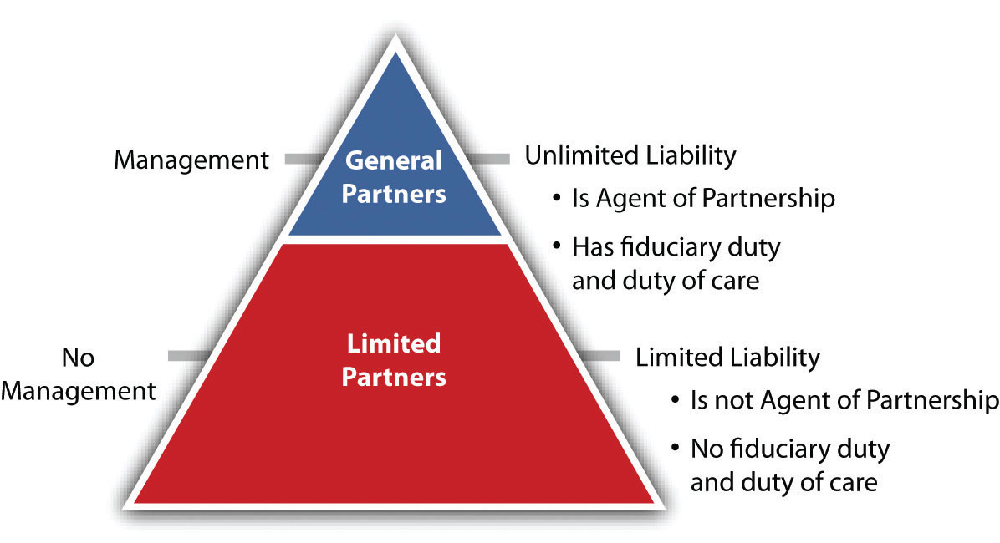

Understand the following aspects of the limited partnership:
The limited partnership is attractive because of its treatment of taxation and its imposition of limited liability on its limited partners.
The original source of limited partnership law is the Uniform Limited Partnership Act (ULPA), which was drafted in 1916. A revised version, the Revised Uniform Limited Partnership Act (RULPA), was adopted by the National Conference of Commissioners on Uniform Laws in 1976 and further amended in 1985 and in 2001.
The 2001 act was
drafted for a world in which limited liability partnerships and limited liability companies can meet many of the needs formerly met by limited partnerships. This Act therefore targets two types of enterprises that seem largely beyond the scope of LLPs and LLCs: (i) sophisticated, manager-entrenched commercial deals whose participants commit for the long term, and (ii) estate planning arrangements (family limited partnerships). The Act accordingly assumes that, more often than not, people utilizing it will want (1) strong centralized management, strongly entrenched, and (2) passive investors with little control over or right to exit the entity. The Act’s rules, and particularly its default rules, have been designed to reflect these assumptions.“Uniform Limited Partnership Act (2001), Prefatory Note,” NCCUSL Archives, http://www.law.upenn.edu/bll/archives/ulc/ulpa/final2001.pdf.
All states except Louisiana adopted the 1976 or 1985 act—most opting for the 1985 version—and sixteen states have adopted the 2001 version. The acts may be properly referred to with a hyphen: “ULPA-1985,” or “ULPA-2001”; the word revised has been dropped. Here, we mainly discuss ULPA-1985. The Uniform Partnership Act (UPA) or the Revised Uniform Partnership Act (RUPA) also applies to limited partnerships except where it is inconsistent with the limited partnership statutes. The ULPA-2001 is not so much related to UPA or RUPA as previous versions were.
A limited partnershipA partnership formed by two or more persons under state law and having one or more general partners and one or more limited partners. (LP) is defined as “a partnership formed by two or more persons under the laws of a State and having one or more general partners and one or more limited partners.”ULPA, Section 102(11). The form tends to be attractive in business situations that focus on a single or limited-term project, such as making a movie or developing real estate; it is also widely used by private equity firms.
Unlike a general partnership, a limited partnership is created in accordance with the state statute authorizing it. There are two categories of partners: limited and general. The limited partners capitalize the business and the general partners run it.
The act requires that the firm’s promoters file a certificate of limited partnershipThe document filed with the appropriate state authority that, when approved, marks the legal existence of the limited partnership. with the secretary of state; if they do not, or if the certificate is substantially defective, a general partnership is created. The certificate must be signed by all general partners. It must include the name of the limited partnership (which must include the words limited partnership so the world knows there are owners of the firm who are not liable beyond their contribution) and the names and business addresses of the general partners. If there are any changes in the general partners, the certificate must be amended. The general partner may be, and often is, a corporation. Having a general partner be a corporation achieves the goal of limited liability for everyone, but it is somewhat of a “clunky” arrangement. That problem is obviated in the limited liability company, discussed in Section 24.2 "Limited Liability Companies". Here is an example of a limited partnership operating agreement: http://www.wyopa.com/Articles%20of%20limited%20partnership.htm.
Any natural person, partnership, limited partnership (domestic or foreign), trust, estate, association, or corporation may become a partner of a limited partnership.
The money to capitalize the business typically comes mostly from the limited partnersA member of a limited partnership who is not involved in running the firm but rather stands as a passive investor., who may themselves be partnerships or corporations. That is, the limited partners use the business as an investment device: they hope the managers of the firm (the general partners) will take their contributions and give them a positive return on it. The contributions may be money, services, or property, or promises to make such contributions in the future.
Control is not generally shared by both classes of partners.
The control of the limited partnership is in the hands of the general partners, which may—as noted—be partnerships or corporations.
Under ULPA-1985 and its predecessors, a limited partner who exercised any significant control would incur liability like a general partner as to third parties who believed she was one (the “control rule”). However, among the things a limited partner could do that would not risk the loss of insulation from personal liability were these “safe harbors”:
However, see Section 24.3.3 "Limited Liability Limited Partnerships" for how this “control rule” has been abolished under ULPA-2001.
General partners owe fiduciary duties to other general partners, the firm, and the limited partners; limited partners who do not exercise control do not owe fiduciary duties. See Figure 24.1 "The Limited Partnership under ULPA-1985".
Figure 24.1 The Limited Partnership under ULPA-1985
The partnership agreement may specify which general or limited partners have the right to vote on any matter, but if the agreement grants limited partners voting rights beyond the “safe harbor,” a court may abolish that partner’s limited liability.
Limited partnership interests may be assigned in whole or in part; if in whole, the assignor ceases to be a partner unless otherwise agreed. An assignment is usually made as security for a loan. The assignee becomes a new limited partner only if all the others consent or if provided for in the certificate; the assignment does not cause dissolution. The happy ease with which a limited partner can divest himself of the partnership interest makes the investment in the firm here more like that in a corporation than in a general partnership.
Limited partners have the right to inspect the firm’s books and records, they may own competing interests, they may be creditors of the firm, and they may bring derivative suits on the firm’s behalf. They may not withdraw their capital contribution if that would impair creditors’ rights.
Unless the partnership agreement provides otherwise (it usually does), the admission of additional limited partners requires the written consent of all. A general partner may withdraw at any time with written notice; if withdrawal is a violation of the agreement, the limited partnership has a right to claim of damages. A limited partner can withdraw any time after six months’ notice to each general partner, and the withdrawing partner is entitled to any distribution as per the agreement or, if none, to the fair value of the interest based on the right to share in distributions.
We noted in discussing partnerships that the partners are not entitled to “compensation,” that is, payment for their work; they are entitled to a share of the profits. For limited partnerships, the rule is a bit different.
Often, general partners are paid for their management work on a sliding scale, receiving a greater share of each dollar of cash flow as the limited partners’ cash distributions rise, thus giving the general partner an incentive to increase limited-partner distributions.
Profits or losses are shared as agreed in the certificate or, if there is no agreement, in accordance with the percentages of capital contributions made.
Liability is not shared.
The general partners are liable as in a general partnership, and they have the same fiduciary duty and duty of care as partners in a general partnership. However, see the discussion in Section 24.3.3 "Limited Liability Limited Partnerships" of the newest type of LP, the limited liability limited partnership (triple LP), where the general partner is also afforded limited liability under ULPA-2001.
The limited partners are only liable up to the amount of their capital contribution, provided the surname of the limited partner does not appear in the partnership name (unless his name is coincidentally the same as that of one of the general partners whose name does appear) and provided the limited partner does not participate in control of the firm. See Section 24.4.1 "Limited Partnerships: Limited Partners’ Liability for Managing Limited Partnership" for a case that highlights liability issues for partners.
We have been discussing ULPA-1985 here. But in a world of limited liability companies, limited liability partnerships, and limited liability limited partnerships, “the control rule has become an anachronism”; ULPA-2001 “provides a full, status-based liability shield for each limited partner, ‘even if the limited partner participates in the management and control of the limited partnership.’ULPA-2001, Section 303. The section thus eliminates the so-called control rule with respect to personal liability for entity obligations and brings limited partners into parity with LLC members, LLP partners and corporate shareholders.”Official Comment to Uniform Limited Partnership Act 2001, Section 303. And as will be noted in Section 24.3.3 "Limited Liability Limited Partnerships" under ULPA-2001 the general partner is also shielded from liability.
Assuming the limited partnership meets a minimum number of criteria related to limited liability, centralized management, duration, and transferability of ownership, it can enjoy the benefits of pass-through taxation; otherwise it will be taxed as a corporation. Pass-through (“conduit”) taxation is usually very important to partners.
The limited partnership’s termination involves the same three steps as in a general partnership: (1) dissolution, (2) winding up, and (3) termination.
Dissolution of a limited partnership is the first step toward termination (but termination does not necessarily follow dissolution). The limited partners have no power to dissolve the firm except on court order, and the death or bankruptcy of a limited partner does not dissolve the firm. The following events may cause dissolution: (1) termination of the partnership as per the certificate’s provisions; (2) termination upon an event specified in the partnership agreement; (3) the unanimous written consent of the partners; (4) the withdrawal of a general partner, unless at least one remains and the agreement says one is enough, or if within ninety days all partners agree to continue; (5) an event that causes the business to be illegal; and (6) judicial decree of dissolution when it is not reasonable to carry on. If the agreement has no term, its dissolution is not triggered by some agreed-to event, and none of the other things listed cause dissolution.
Dissolution requires the filing of a certificate of cancellation with the state if winding up commences.
General partners who have not wrongfully dissolved the partnership may wind it up, and so may the limited partners if all the general partners have wrongfully dissolved the firm. Any partner or that person’s legal representative can petition a court for winding up, with cause.
Upon winding up, the assets are distributed (1) to creditors, including creditor-partners, not including liabilities for distributions of profit; (2) to partners and ex-partners to pay off unpaid distributions; (3) to partners as return of capital contributions, unless otherwise agreed; and (4) to partners for partnership interests in proportion as they share in distributions, unless otherwise agreed. No distinction is made between general and limited partners—they share equally, unless otherwise agreed. When winding up is completed, the firm is terminated.
It is worth reiterating the part about “unless otherwise agreed”: people who form any kind of a business organization—partnership, a hybrid form, or corporations—can to a large extent choose to structure their relationship as they see fit. Any aspect of the company’s formation, operation, or ending that is not included in an agreement flops into the default provisions of the relevant law.
A limited partnership is a creature of statute: it requires filing a certificate with the state because it confers on some of its members the marvel of limited liability. It is an investment device composed of one or more general partners and one or more limited partners; limited partners may leave with six months’ notice and are entitled to an appropriate payout. The general partner is liable as a partner is a general partnership; the limited partners’ liability is limited to the loss of their investment, unless they exercise so much control of the firm as to become general partners. The general partner is paid, and the general and limited partners split profit as per the agreement or, if none, in the proportion as they made capital contributions. The firm is usually taxed like a general partnership: it is a conduit for the partners’ income. The firm is dissolved upon the end of its term, upon an event specified in the agreement, or in several other circumstances, but it may have indefinite existence.